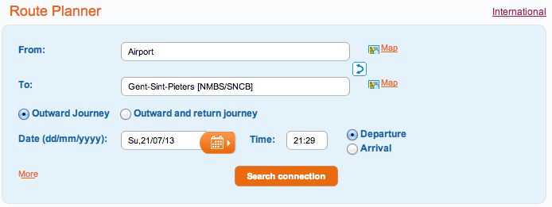

收到了录取到登机离开，抱着对未知国家的憧憬和去国怀乡的惆怅，容易思潮澎湃，有时候容易对国外生活的小问题过度担忧。此外在网络与比利时相关的信息较为贫乏，查不到第一手的消息。念及于此，本章提供一些行前准备和比国生活相关信息，以作在国内解闷读物也让大家对比国生活有所了解。
出门在外，找个住处是首要的任务。于是放在第一个介绍。
Attention
在比利时持有Visa D的学生需要提供居住地址（Domicile）才可办理居留许可（Residence Permit）。在根特有少部分房子是不能提供Domicile的，这种房子请不要租住。后面章节会对此有进一步说明，也可以参考根特居留相关网站
根特因为近年国际学生持续增加，新建了一批学校宿舍，其硬件条件在根特全体房源中质量中上，价格也较为公道，值得留意。根特学生宿舍提供给硕士的一般是studio而博士为apparement，但是因为申请时间较晚的原因也可能被分给Kamer，相关的价格信息和申请流程分别可以在硕士和博士找到。住在宿舍一来可以认识到很多同来的中国学生迅速融入当地生活，二来与国际学生住在一起可以很容易地认识许多新朋友增广视野，不失为一个好选择。
要想住在宿舍一般可以直接根据网上提供申请流程操作即可，遇到问题的时候请联系我们实验室秘书。
在根特，房子一般分为下述四个类型
在根特找到一个合心意的房子是需要一点时间，技巧和运气的。对Kamer至Single Apartment最为常见实用的租房方式是“扫街”，也就是说在你想租房的附近到处转转，因为房东会把租赁信息用鲜亮的黄纸贴在窗户上，看好了地方直接打电话联系看房，一般能够很快地掌握房屋第一手信息，也是编者最为推荐的做法。考虑到本文读者身处国内，可以先找个临时住宿然后“扫街”。
此外，也可以利用互联网找房源联系好了过来之后马上签约。但是编者并不十分推荐此做法，因为不亲眼确认一下房子的情况很有可能对会租到不满意的房子，此外大家对根特环境不熟悉也有可能住到离上班地方交通很不方便的地方，所以希望住房前慎重考虑。但是无论如何了解一下根特的房地产市场对租房是很有帮助的，下面给出了提供比利时部分房屋租赁信息的网站，值得注意的是，这些网站更新往往滞后，有时候会出现房子已经租出去了信息仍在网上的情况
除了在房屋检索引擎之外，直接在房地站中介公司的网站上查询也是个好办法
这节主要介绍在欧洲的交通通行方式，简单分为在根特内的交通，比利时内部的交通也稍微介绍一下比利时去邻近国家的交通。
在根特而言，常见的交通方式无外乎公交和自行车了。
根特的公交系统比较发达，而且一般情况下是比较准时的，不失为在根特的主要交通方式。根特的公交公司是De Lijn，在票务相关下提供最新的票价信息。值得留意的是公交的价格梯度是非常明显的，事前用购票机购票和上车购票相差1欧，而多次票和单词票的价格也比较悬殊，所以请先查看避免无谓的花销。此外对长期使用者建议购买月票，季票或者年票，根据年龄选择BuzzyPass或者OmniPass，可以无限次使用乘坐比利时境内DeLijn公交。
自行车是最常用的交通工具，因为根特市范围很小，道路建设良好大部分都特意划分出来自行车专用道，骑行体验很好。不过在冬天的时候骑车就是冷暖自知了。在根特入手自行车一般有如下几个选择
比利时内的交通最常见的选择就是火车。另一个不太常见的选项则是自驾。
首先介绍一下比铁。比利时全境内铁路网密集，只有数千人的小镇子也有铁路相连，发车频率高，此外因为网上可以查询时刻表而且发车到站时间在一般情况下都较准，乘坐起来十分方便。值得注意的是比利时火车站没有进站检票一说，检票一般是上车之后，所以在车站看见车了直接上就可以了，换乘也是如此，十分便利。
谈了这么多比利时铁路网的好，下面就介绍一下如何查询时间及购票。关于乘车和购票相关内容都可以在比铁网站上进行。在下面的图中显示了如何从布鲁塞尔国际机场Airport到根特圣彼得车站Gent-Sint-Pieters的搜索，车站名后面方框里面的NMBS/SNCB表明了这是一个火车站，NMBS和SNCB分别是比利时国铁的荷兰语缩写和法语缩写。在这个网站中大家也可以按照路名或者地标搜索，是相当便利的。
对留学生来说，乘坐比铁一般购买“十次票”，即RailPass或者GoPass 10，分别针对一般乘客和26岁以下青年乘客，价格约为50欧和80欧。使用十次票可以随意坐比利时国铁的火车从一个城市到另一个城市，不计转车次数，相比起单独购票，是非常便宜的。对于实验室的博士而言，如果你不住在根特而每天用火车往返实验室是给报销火车票的，因为这个政策，实验室可能有近三分之一并不住在根特而每日通勤。更加详细的信息可以在比铁票务相关页面上查询。
Note
坐火车去机场除了如果使用GoPass或者RailPass还需要另付一个特别费用称为Diablo Fee，现时价格为5欧。
Tip
对26岁以下学生来说除了有十次票也有一次票。总而言之在大部分的时候比铁都有比普通单程/往返票更为合适的选择，提请大家事前多查询。
除了火车之外，自驾也是通勤和出游的一个好选择，特别是考虑到中国驾照可以直接换比利时驾照，此点非常有吸引力。
{kind=link}